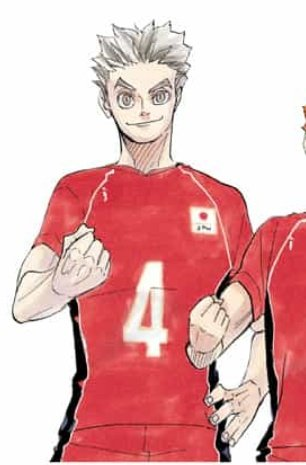

5 melhores personagens de Haikyuu!! pós TimeSkip:
Após a derrota do Karasuno nas quartas de final do Nacional para o Kamomedail, o manga trás um Time Skip para quando os jogadores do colégial viram profissionais
1-Tobio Kageyama

Kageyama é conhecido por ser o "Rei da Quadra" e um gênio do vôlei, devido as suas técnicas e seu senso de jogo. Como um levantador de alto calibre, Kageyama possui a habilidade de unir seu time com seu potencial, mas ele se esforça para poder se comunicar corretamente com a sua equipe. Com o tempo ele aprendeu a trazer a tona o verdadeiro potencial de seus atacantes de ponta usando as suas habilidades. Ele é capaz de analisar as condições do atacante para que possa ajustar os seus lançamentos de acordo, ao invés de forçar como fazia anteriormente.
No colégial ele jogou pela equipe do Karasuno, agora no profissional, Kageyama jogou:
-
Schweiden Adlers
-
Ali Roma

-
Seleção Japonesa
2- Kōrai Hoshiumi
Nos jogos, Hoshiumi é calmo e controlado, mas na verdade ele é uma pessoa entusiasmada, barulhenta e orgulhosa que afirma que suas habilidades sempre deixaram outras pessoas em choque por causa de sua altura. Ele fica irritado rapidamente, especialmente quando as pessoas não conseguem lhe mostrar um olhar impressionado ou quando comentam sobre sua baixa estatura.
No colégial ele jougou pela equipe do Kamomedail, agora no profissional, Hoshiumi jogou:
-
Schweiden Adlers
-
Seleção Japonesa
3 - Hinata Shoyo

Shoyo possui uma personalidade animada e energética. Ele fica excitado facilmente e pode ser um pouco barulhento, perdendo apenas para Yu e Ryunosuke. Na maior parte das vezes, Shoyo é muito simplista, o que, às vezes, faz com que ele tome decisões precipitadas.
No colégial ele jougou pela equipe do Karasuno, agora no profissional, Hinata jogou:
-
MSBY Black Jackals
.jpg)
-
Seleção Japonesa
4 -Kiyoomi Sakusa
Sakusa se mostrou muito habilidoso, sendo considerado um dos top 3 aces do Japão, junto de Ushijima e Kiryu no segundo ano do colégio pelo Itachiyama. Ele é muito habilidoso no ataque e na defesa, surpreendendo Ushijima. Seu companheiro de equipe Motoya Komori, outro membro do acampamento juvenil, afirma que Sakusa praticamente não tem pontos fracos.
No colégial ele jougou pela equipe do Itachiyama, agora no profissional, Sakusa jogou:
-
MSBY Black Jackals
-
Seleção Japonesa
5 -Kotaro Bokuto

Ele tem uma personalidade lúdica, amigável, bombástica e infantil e é descrito por sua equipe como tendo "oscilações de humor", onde até a menor coisa pode mudar seu humor, o que afeta seu desempenho. Por causa disso, ele foi referido por Yukie, o gerente do terceiro ano do time, como 'simplório'. No entanto, ele é admirado por sua própria equipe e pelos adversários por sua habilidade impressionante e comportamento de elevar o moral.
No colégial ele jougou pela equipe do Fukurodani, agora no profissional, Bokuto jogou:
-
MSBY Black Jackals
-
Seleção Japonesa
